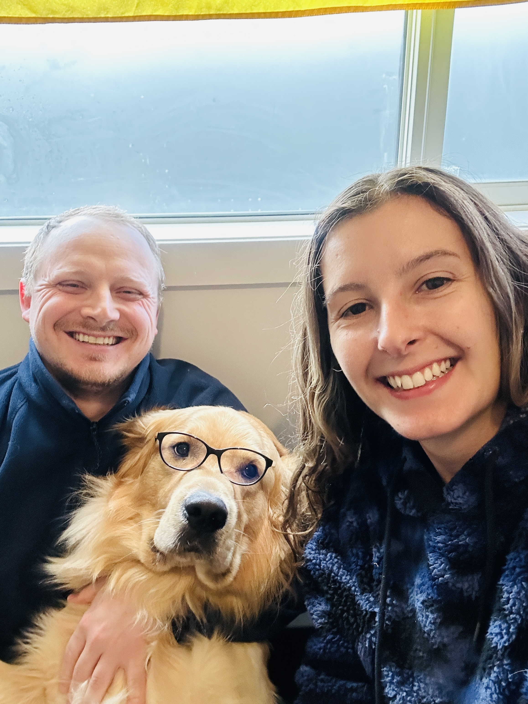

LATEST RECIPES

CATEGORIES
ABOUT ME
Hi there, nice to meet you!
Hi, I'm Eli, and cooking has always been a special part of my life. I love experimenting with new recipes I find on social media and other food blogs, and there's nothing better than preparing a delicious meal for my fiancé. Cooking also brings me joy because my dog is always by my side, watching curiously as I move around the kitchen. This website is a reflection of my love for food and cooking, created as part of my final project at General Assembly. Whether you're a beginner or a seasoned cook, I hope these recipes inspire you to create something tasty and fun!